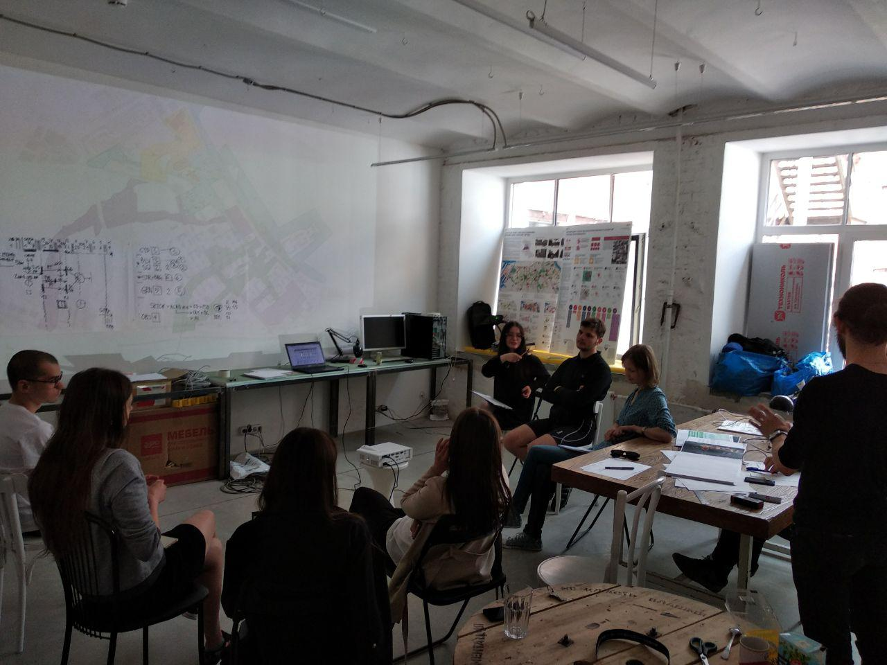
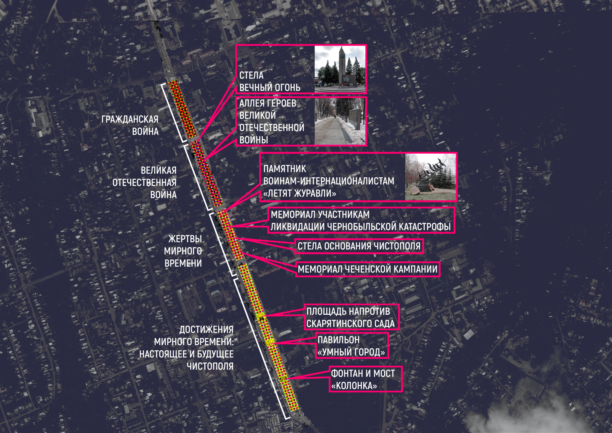
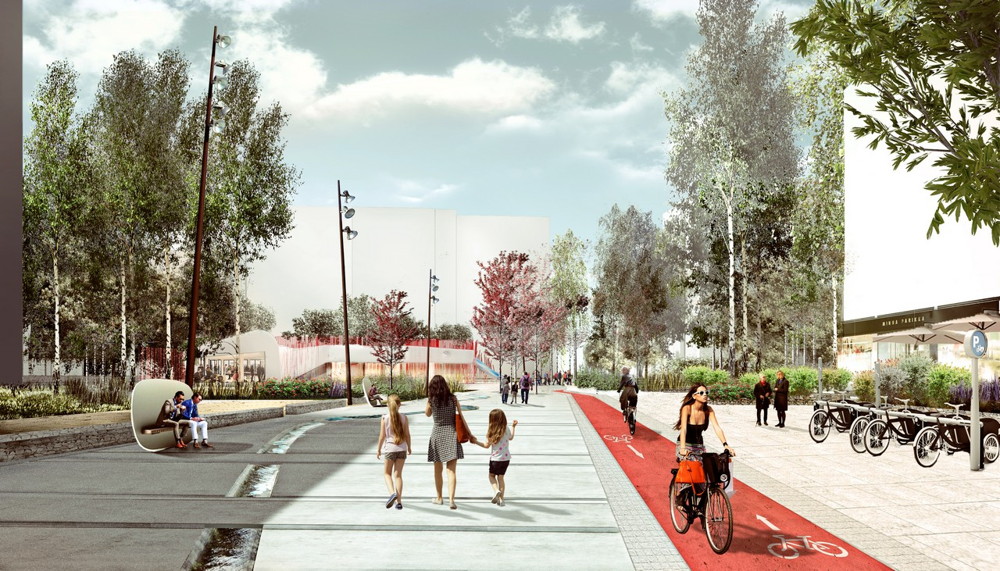
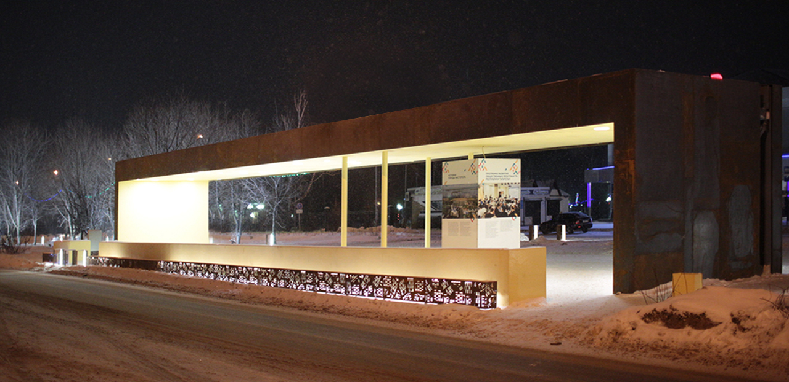

Проектная группа из Санкт-Петербурга. Наш профиль - благоустройство городских территорий. Мы доводим идею до реализации, сопровождая проект на всех этапах.
заказчик: Администрация Петроградского района Санкт-Петербурга
партнеры: Исследовательская группа "Друзья Карповки" Независимая экспертная платформа ОткрытаяЛабораторияГород (ОЛГ)
концепция, презентация, технический отчет осень 2017 - зима 2018
"Концепция развития набережной Карповки как результат масштабного исследования"Статья на портале "Администрации Санкт-Петербурга" [подробнее]
"Сердце Петроградки" - исследование набережных Карповки"Статья на портале образовательно-обменного проекта "Право на воду" [подробнее]
Всероссийский конкурс лучших проектов создания комфортной городской среды в малых городах и исторических поселениях [подробнее о конкурсе] организатор: Минстрой России
победа в номинации "Малые города с численностью населения от 50 до 100 тыс. человек"
заказчик: Фонд "Институт развития городов Республики Татарстан"
партнеры: Исполнительный комитет Чистопольского муниципального района MLA+ СПб
концепция, презентация 2018
"Чистополь – победитель Всероссийского конкурса лучших проектов создания комфортной городской среды в малых городах и исторических поселениях"Статья на едином Портале органов государственной власти и местного самоуправления "Официальный Татарстан" [подробнее]
"Татарстан выиграл 14 грантов на благоустройство в малых городах и исторических поселениях"Статья на портале "Парки и скверы Татарстана" [подробнее]
Открытый международный архитектурный конкурс на разработку концепции городских общественных пространств в Новой Москве организатор: Москомархитектуры, ГК "А101"
победа в конкурсе с международным участием
заказчик: ГК "А101"
партнеры: MLA+ СПб
концепция, презентация ноябрь 2017
"Международный конкурс на разработку концепции общественных пространств в Новой Москве"Статья на портале "Архсовет Москвы" [подробнее]
"MLA+ разработает концепцию общественных пространств в Новой Москве"Статья на портале "Стройкомплекс города Москвы" [подробнее]
Президентская программа "Развитие общественных пространств городов Республики Татарстан"
заказчик: Фонд "Институт развития городов Республики Татарстан"
партнеры: MLA+ СПб Проектная группа 8 ЛенСтальКонструкция knappt
концепция, эскизный проект, авторский надзор, реализация 2017
"В Чистополе преобразится бульвар по улице Карла Маркса"Отчет о проектном семинаре на портале "Парки и скверы Татарстана" [подробнее]
"В благоустройстве бульвара на К. Маркса применялись самые передовые технические решения в области архитектуры и дизайна"Статья на едином Портале органов государственной власти и местного самоуправления "Официальный Татарстан" [подробнее]